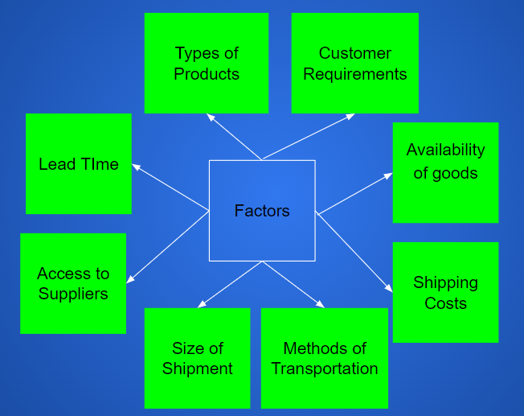

Methods of Physical Distribution in the Supply Chain
Callout
Intermodal Shipping and Transportation
Air Freight: Transportation of goods by aircraft or airplanes.
Ocean Freight: Transporting of goods by sea – putting cargo in large containers which are loaded onto vessels.
Rail: Transporting of goods by trains using the railroads.
Motorized Carriers: Transporting of goods by motorized vehicles.
Pipelines: Long-distance transportation of goods by pipelines connecting different destinations, especially oil and gas.
Home Delivery Service: Bringing items to the customer's home rather than the customer taking or collecting them from the store. E.g., Grocery Gateway, Amazon
Crowd-sourced delivery: The use of the Internet and/or technology to obtain delivery services from the public. E.g., Uber Eats, Food Panda

Factors to consider in selecting a distribution method:

Callout
Containerization
- Use of standard-sized reusable metal boxes to store and ship freight.
- Containers come in two sizes: small and large.
- Designed to fit on top of each other like toy blocks and have grooves or hooks to accommodate specialized unloading and loading devices.
- Easy to use and easy to handle = more efficient and economical to ship; they are also secure.
- Used on trucks, ships, and railway cars.